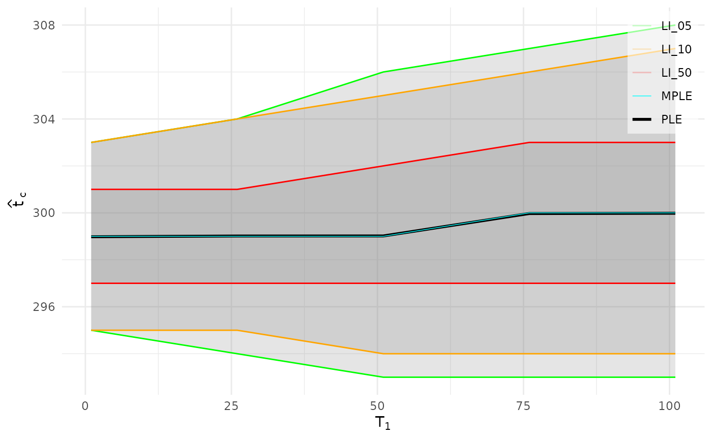

Rolling-Window LPPLS Calibration (rolling \(T_1\), fixed \(T_2\))
Source:R/lppls_rolling.R
lppls_rolling.RdCalibrates a sequence of LPPLS models that share a common calibration end
\(T_2\) while the start time \(T_1\) rolls over t1_seq. This is the
multi-window primitive underlying both the window-diagnostic plots
(rolling_tc_plot(), rolling_param_plot()) and Lagrange regularization
(lppls_lagrange()): the (expensive) calibrations are computed once here and
reused by all downstream analyses.
Usage
lppls_rolling(
log_price,
t1_seq,
hold_out = 0,
fh = 30,
tc_init = NULL,
fit_args = list(),
fb = FALSE
)Arguments
- log_price
Numeric vector of log-prices for the full series.
- t1_seq
Integer vector of rolling start indices (absolute positions into
log_price). All entries must be< T2 = length(log_price) - hold_out.- hold_out
Integer, number of observations reserved from the end of the full series for the forecast/validation region (default 0). Fixes \(T_2\).
- fh
Integer, forecast horizon passed to
fit_lppls()(default 30).- tc_init
Numeric or
NULL. Initial critical time forfit_lppls(). IfNULL(default) a per-window valuen_cal + floor(fh / 2)is used, wheren_calis the window's calibration length.- fit_args
Named list of additional arguments forwarded to
fit_lppls()(e.g.lower,upper,m_init,o_init,num_searches,mode,mpl_cutoff,factr). The argumentslog_price,fh,hold_out,tc_initandfbare controlled bylppls_rolling()and are ignored if supplied here. Ifmodeis not supplied it defaults to"MPL".- fb
Logical, whether to print per-window feedback (default
FALSE).
Value
An object of class "lppls_rolling": a list with
- table
Data frame with one row per window:
T1,n_cal, the absolute point estimatestc,m,omega,A,B,C1,C2,D, the calibration-region residual sum of squaressse_cal, the absolute likelihood-interval boundsLI5l/LI5u/LI10l/LI10u/LI50l/LI50uand the absolute modified-profile-likelihood estimatetc_hat_mpl.- fits
List of best-fit parameter lists (
fit[[1]]) per window, in window-local time.- t1_seq, T2, hold_out, fh, n_full
The calibration setup.
- fit_args
The effective list of arguments forwarded to
fit_lppls()(after stripping the controlled ones and defaultingmode); recorded solr_trend_test()can re-roll bootstrap replicates with the same settings.
Details
For each \(T_1\) in t1_seq the model is calibrated on
log_price[T1:length(log_price)] via fit_lppls(). The last hold_out
observations of every window are reserved for the forecast/validation region,
so the calibration region is the absolute interval \([T_1, T_2]\) with the
common end \(T_2 = \texttt{length(log\_price)} - \texttt{hold\_out}\) held
fixed across windows.
Because fit_lppls() re-indexes each window to start at 1, all per-window
results (tc, the likelihood intervals and tc_hat_mpl) are shifted back to
absolute time by adding \(T_1 - 1\) before being returned.
The likelihood-interval columns (LI5l ... tc_hat_mpl) are populated only
when the fit is run in mode = "MPL" (the default); under mode = "F2" they
are NA but the point estimates and sse_cal (hence Lagrange) are identical.
Profiling on macOS
mode defaults to "MPL", so profiling a rolling calibration on macOS hits
the R-profiler/Accelerate crash described under "Profiling mode = \"MPL\" on
macOS" in fit_lppls(). The same options(matprod = "internal") workaround
applies. Unprofiled runs are unaffected.
Examples
## A simulated bubble: 300 observations of an LPPLS path whose critical time
## is t = 301
set.seed(3630)
N <- 300
log_p <- eval_lppls(seq_len(N), A = 8, B = -0.025, C1 = 0.0015, C2 = 0.001,
tc = N + 1, m = 0.6, omega = 8) + rnorm(N) * 0.01
## Five windows whose start T1 rolls forward from 1 to 101, all ending at
## T2 = 280. MPL mode gives the likelihood intervals rolling_tc_plot() draws.
roll <- lppls_rolling(
log_price = log_p,
t1_seq = seq(from = 1, by = 25, length.out = 5),
hold_out = 20, fh = 30,
fit_args = list(lower = c(0.1, 6, -0.03, 0.8),
upper = c(0.9, 13, -1e-14, 1e6),
m_init = 0.5, o_init = 8, num_searches = 1,
mode = "MPL")
)
roll
#> LPPLS rolling-window calibration
#> Windows (T1): 5 (from 1 to 101, step 25)
#> T2 (cal. end): 280
#> hold_out: 20 fh: 30
#> Likelihood intervals: present (MPL)
rolling_tc_plot(roll)
